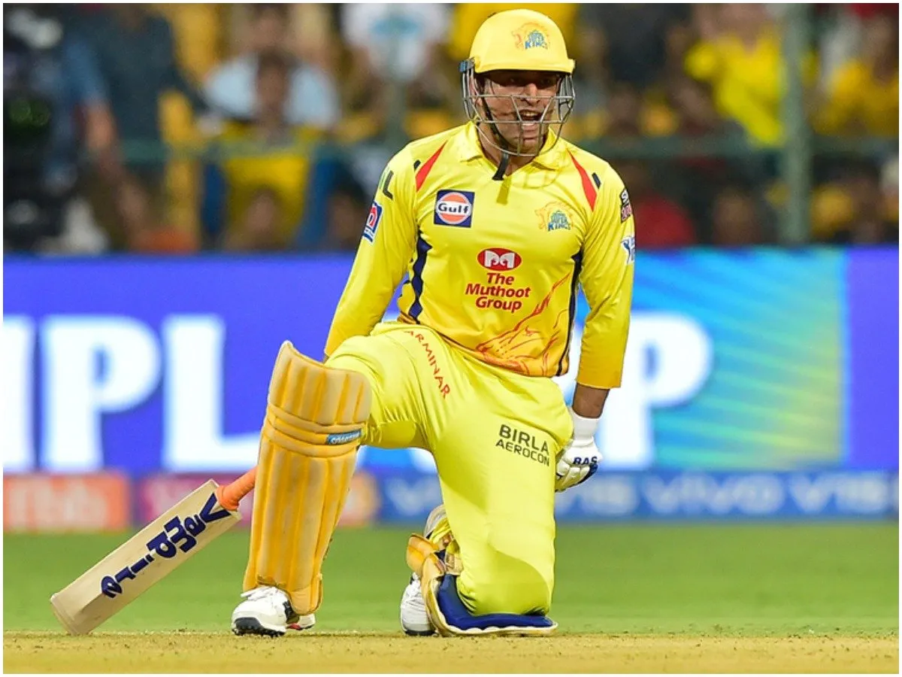

this is all about msd  Mahendra Singh Dhoni, one of the most dynamic captain on the field , personalitytruly adore.HE is known by the number 7 Dhoni is known as one of the best ODI captain the game of cricket has seen and will forever be for very long Some of his decisions on the field will make you scratch your People think he is person who always follow his instincts, makes decision by his gut feelings and what not but in my opinion he is the better observer of the game
Under Dhoni's captaincy, India won the2007International Cricket Council (ICC) World Twenty20, the Commonwealth Bank Series of 2007to 2008, the 2010 Asia Cup, the 2011ICC Cricket World Cup and the 2013 ICC Champions Trophy.
On numerous occasions, Mahi single handedly won matches for India. He has been amongst the ICC top 10 batsmen in ODIs for past any years and is a tremendous and an extra-ordinary finisher of the game. A team leader should be able to lead by example especially when the team needs the most. No one can forget the inning played by MSD in 2011 World Cup Final at Wankhede, Mumbai. He rose up to the occasion and played decisive role in the victory.